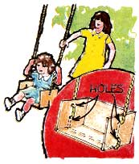
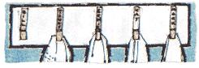
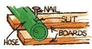
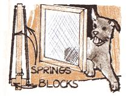
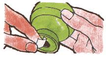
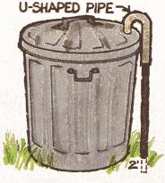

An ideal "no-tipping" swing for toddlers can be made from one end of a wooden box . . . or put together, from scratch, using
four pieces of scrap wood. The trick, however, is to thread the rope through two holes in each side of this box-type
construction ... so your small-fry will have a particularly safe-while-swinging seat.
Screw a number of spring-type clothespins to a wood panel and attach the
assembly to the bathroom wall. This handy device can then hold washcloths
so they'll dry quickly .. . and-if you paint names on the pins-each family member
can quickly identify his or her own cloth.
To deodorize a foul-smelling bottle, simply fill the container with cold water . . . add a pinch of dry mustard ... let
the solution stand for about one hour . . . then rinse well.
Here's an autumn shop project that will eliminate the necessity of using salt or ashes on icy sidewalks this winter. Cut
small slits in two lengths of discarded garden hose and drive nails through these into a series of evenly spaced boards. When the auxiliary walk isn't needed,
it can be rolled up and stored away.
PET POWER
Your dog or cat can come and go at will if you hinge the lower part of a screen door and install long coil springs on
both sides. These should exert equal tension .. which will keep the pet door closed, yet allow the animal to push its
way either in or out.
. . . can be made from most any straight-backed chair. All you have to do is drill holes in the ends of the chair legs
and insert casters (large-sized, rubber-tired ones are best, but other types will work, too). Of course, the occupant will
need an assistant to push him or her along.
If you've misplaced any corks from your salt or pepper shakers-or if the stoppers
have a habit of coming loose-seal the holes with a small strip of tape.
Drive a steel rod approximately two feet into the ground and cap the post with a U-shaped pipe ... the other end of which fits
through a neatly drilled hole in the can's lid. Not even the biggest dog in the neighborhood for the forest's wiliest raccoon)
will be able to tip your trash over again.
September- October
1 Edgar Rice Burroughs' birthday, 1875
2 Mark Anthony defeated, 31 B.C.; Great fire in London begins, 1666
3 Revolutionary War officially ends, 1783
4 Henry Hudson discovers Manhattan, 1609; First self-service restaurant opens in
N.Y.C. 1885
5 Jesse James birthday, 1847; Raquel Welch's birthday, 1942
6 Cat nights (as opposed to dog days) commence
7 Grandma Moses' birthday, 1908
8 Peter Seller's birthday, 1925
9 Leo Tolstoy's birthday, 1828, Otis Redding's birthday, 1941
10 Lincoln Highway-to the first coast-to-coast, paved road-opens, 1913
11 First recorded tickest scalping: Jenny Lind concert in N.Y.C., 1850
12 John and Jackle Kennedy marry, 1953
13 Libya hits record temperature of 136.4F
14 Dante dies, 1321
15 James Fenimore Cooper's birthday, 1789; Agatha Christie's birthday 1891
16 Oklahoma Land Rush, 1893
17 Ken Kesey's birthday, 1935; Hank Williams' birthday, 1923
18 First issue of the New York Times, 1851
19 Mickey Mouse makes acting debut, 1928
20 Equal Rights Party forms and nominated Belva Lockwood for President, 1884
21 U.S.'s first daily newspaper published in Pennsylvania, 1784
22 Last eight witches hanged in Salem, Massachusetts, 1692
23 First Keystone comedy, 1912
24 First official U.S. autopsy (paid for with a "hogshead of tobacco"), 1657
25 Ford Motor Company established eight-hour day, five-day week, 1926
26 Johnny Appleseed's birthday, 1774
28 Pilgrim's Progress published, 1678; Brigitte Bardot's birthday, 1934; Marcello
Mastrolani's birthday, 1924
29 First course in radio advertising offered at New York City College, 1930
30 Safety pin invented, 1894
1 Alexander the Great defeats Persia, 331 B.C.
2 Mohandas Gandhi's birthday, 1869
3 Lincoln proclaims Thanksgiving Day, 1863
4 St. Francis of Assisi's birthday, 1182; Janis Joplin dies, 1970
5 Dalton gang killed in bank robbery, 1892
6 Thor Heyerdahl's birthday, 1914; The Jazz Singer begins the era of
"talking" films, 1927
7 Edgar Allan Poe dies, 1849
8 Che Guevara killed in Bolivia, 1967
9 John Lennon's birthday, 1940
10 The New York Times produces 972-page issue weighing 7-1/2 pounds, 1971
11 Eleonor Roosevelt's birthday, 1884
12 Aleister Crowley's birthday, 1875; Dick Gregory's birthday, 1932
13 Vergil's birthday, 70 B.C.; Lenny Bruce's birthday, 1926
14 Normans conquer England, 1066; First faster-tha-sound flight, 1947
16 Oscar Wilde's birthday, 1856; Eugene O'Neill's birthday, 1888
17 Sterling Moss's birthday, 1929
18 Chuck Berry's birthday, 1926
19 Marlon Brando' stage debut, 1944; Peter Max's birthday, 1937
20 U.S. Navy seizes Monterrey, Mexico, 1842
21 U.S. Navy restores Monterrey Mexico with apologies ("We thought
we were at war!"), 1842
22 Mercury, Venus, and Uranus in conjunction with the moon.
23 Sarah Bernhardt's birthday, 1844; Swallows leave Capistrano
25 Charge of the Light Brigade, 1854
27 Dylan Thomas's birthday, 1914
28 Erasmus's birthday, 1466; Return to Standard Time
29 Sir Walter Raleigh executed in London, 1618; Stock Market
collapses, 1929
30 Grace Slick's birthday, 1939
|
 |
 |
 |
|
 |
 |
 |